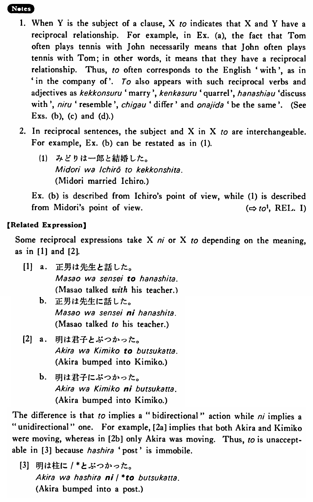

と (2) (B. 476)
- (ks).
- 私はアンディーと一緒にパーティーに行った・行きました。
- I went to a party (together) with Andy.
- (a).
- トムはジョンとよくテニスをする。
- Tom often plays tennis with John.
- (b).
- 一郎はみどりと結婚した。
- Ichiro married Midori.
- (c).
- この車は僕の車と同じです。
- This car is the same as my car.
- (d).
- 日本のきゅうりはアメリカのきゅうりと少し違います。
- Japanese cucumbers are a little different from American ones.
